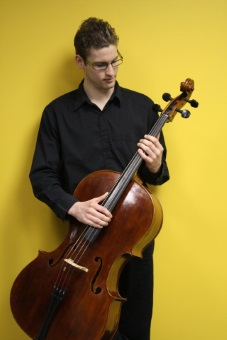

Benjamin Louwersheimer started playing cello at the age of eight. His first lessons were from Ian Hampton (Purcell String Quartet) at the Langely Community Music School. In June of 2003, as a 12 year old, he performed his first full length chamber recital in the Rose Gellert Recital Hall in Langley. As a youth, he was a member of the Parnassus String Quartet which performed at numerous functions including a production of “A Christmas Carol” with CBC Radio Host, Paul Grant, and placed first at the BC Provincial Finals (2004).
Benjamin won the Abbotsford Symphony Young Musicians Challenge (2004) and was the youngest winner of the Fraser Valley Symphony Concerto Competition (2006).
As a soloist, Benjamin has performed multiple times with local orchestras in Chilliwack and Seattle which featured demanding works as the Schumann Cello Concerto, the Dvorak Cello Concerto, and the Haydn Cello Concerto in D Major.
While completing a degree in cello performance at the Vancouver Academy of Music, Benjamin studied with Brian Manker, principal cellist of the Montreal Symphony. Always an eager student, Benjamin has attended the prestigious Master Classes at Orford, Domain Forget, has been a member of the National Youth Orchestra of Canada, the Orford Academy Orchestra, and a returning musician of the National Academy Orchestra of Canada.
Currently Benjamin spends his time teaching privately, and in the newly founded El Sistema program at the Bakerview Academy of Music in Abbotsford. In October, he is performing two full length chamber recitals in White Rock and West Vancouver with concert pianist Krystyna Tucka.